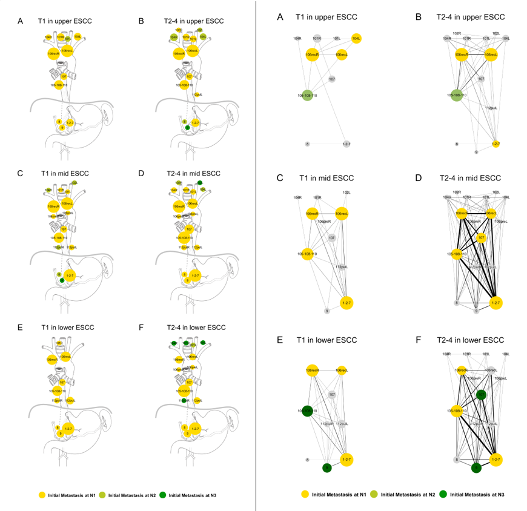

|
|
Development and Validation of a Robust and Interpretable Early Triaging Support System for Patients Hospitalized With COVID-19
Baek, S., Jeong Y. J., Kim Y. H., Kim J. Y., Kim J. H., Kim E. Y., Lim J. K., Kim J., Kim Z., Chung M. J.†, Kim K.†
Journal of Medical Internet Research (JMIR), 2024
paper /
pdf /
code /
citation /
web application
- Conducted a government funded ($9M), multicenter (19 hospitals), retrospective study to develop and validate a ML-based Robust and Interpretable Early Triaging System (RIETS) for predicting COVID-19 severity progression as the first author under the supervision of Dr. Kyunga Kim.
- Established RIETS through comprehensively evaluating all possible combinations of candidate feature subsets and modeling algorithms.
- Utilized a tree-based unsupervised learning technique (i.e., DDRTree) to cluster and characterize patients based on the features in RIETS.
- Applied Shapley Additive exPlanations (SHAP) to interpret the marginal contributions of individual features in RIETS.
|


|
Application of Network Analysis and Association Rule Mining for visualizing the Lymph Node Metastasis Patterns in Esophageal Squamous Cell Carcinoma
Baek, S., Kim, K.†, Park, S.Y.†, Jeon, Y. J., Lee, J. H., Cho, J. H., Kim, H. K., Choi, Y. S., Zo, J. I., Shim, Y. M.
Scientific Reports (in 2nd round review), 2024
code /
pdf /
citation
- Conducted a retrospective observational study on lymphatic metastases patterns in esophageal squamous cell carcinoma (ESCC) as the first author under the supervision of Dr. Seongyong Park and Dr. Kyunga Kim.
- Performed network analyses to elucidate the complex lymphatic metastases patterns in ESCC patients.
- Implemented association rule mining to quantify the important associations among metastasized lymph nodes.
|
|
|
Clinical Characteristics and Laboratory Biomarkers in ICU-admitted Septic Patients with and without Bacteremia: A Predictive Analysis
Baek, S., Lee S.J.
medRxiv, 2023
paper /
pdf /
code /
citation
- Conducted a retrospective cross-sectional study to develop a multivariable logistic regression-based mortality prediction system for severe patients with or without bacteremic sepsis as the first author under the supervision of Dr. Seungjun Lee.
- Collected clinical and laboratory biomarkers from 300+ severe patients by thoroughly investigating electronic health records.
- Utilized Kaplan-Meier curve to visualize the patient survival probabilities within a 30-day hospitalized period.
|
|
Conference Presentations
|
-
Oral Spotlight & Poster Presentation, "Early Triaging Support System for Hospitalized COVID-19 Patients: a Machine-Learning based Severity Prediction Model using Nationwide Multi-Center Real World Data", American Society for Microbiology (ASM) 2023, Houston, USA, June 2023
-
Poster Presentation, "Clinical Characteristics and Laboratory Biomarkers in ICU-admitted Septic Patients with and without Bacteremia: A Predictive Analysis", American Society for Microbiology (ASM) 2022, Washington, D.C., USA, June 2022
-
Oral Presentation, "Clinical Characteristics and Laboratory Biomarkers in ICU-admitted Septic Patients with and without Bacteremia: A Predictive Analysis", European Congress of Clinical Microbiology and Infectious Diseases (ECCMID) 2022, Lisbon, Portugal, April 2022
-
Poster Presentation, "Clinical performance evaluation of 'Boditech Quick COVID-19 Ag' test that can detect SARS-CoV-2 specific antigen in saliva from COVID-19 suspected patients", Laboratory Medicine Congress & Exhibition (LMCE) 2021, Online (Virtual Conference), September 2021
|
|
Patents
|
-
Baek, S., Kim, K. “Apparatus and method for predicting patient prognosis using machine learning model”. Korea Patent Pending: No. 10-2023-0129662. 26 Sep. 2023
-
Baek, S., Kim, K., Park, S.Y. “Visualization method for lymph node metastases in esophageal cancer and apparatus”. Korea Patent Pending: No. 10-2024-0002349. 05 Jan. 2024
|
|
Research Experience
|
-
Sionic AI, Seoul, Korea
AI Research Scientist, 07/2024-Current
Leading a multimodal LLM research project to optimize AI reasoning and content detection in various file formats, aiming to develop state-of-the-art models for on-premise deployment.
-
Department of Anesthesiology and Pain Medicine, Seoul National University Hospital, Seoul, Korea
Medical Data Scientist, 01/2024-06/2024
Conducted a retrospective study on developing an offline reinforcement learning-based real-time alert system for mechanical ventilators under the supervision of Dr. Hyunkyu Yoon.
-
Medical AI Research Center, Samsung Medical Center, Seoul, Korea
Medical Data Scientist, 08/2022-12/2023
Conducted a government-funded multicenter retrospective study to develop and validate a ML-based Early Triaging System for predicting COVID-19 severity progression under the supervision of Dr. Kyunga Kim.
-
Department of Laboratory Medicine, Gyeongsang National University Changwon Hospital, Changwon, Korea
Lead Researcher, 05/2021-12/2021
Conducted a retrospective cross-sectional study to develop a mortality prediction system for severe patients with or without bacteremic sepsis under the supervision of Dr. Seungjun Lee.
|
|
Academic Services
|
-
Statistical Peer Reviewer for original articles and research letters, JAMA Network Open, 01/2024-Current
|
|
Teaching Experience
|
-
Institute of Convergence Medicine with Innovative Technology, Seoul National University Hospital, Seoul, Korea
AI Research Seminar Speaker, 01/2024-05/2024
Expanded modeling options in healthcare AI research for 30+ researchers by introducing state-of-the-art transformer-based models.
-
Kim Study Online Platform, Seoul, Korea
AI/ML Programming Lecturer, 07/2023-Current
Designed and implemented a customized curriculum for 20+ students, focusing on programming techniques, explainable AI, data mining, and data visualization.
-
Research Institute for Future Medicine, Samsung Medical Center, Seoul, Korea
Healthcare AI Instructor, 04/2023-11/2023
Introduced healthcare AI tools to medical doctors and researchers by conducting monthly AI seminars.
|
|
Leadership Experience
|
-
Republic of Korea Air Force (ROKAF), 5th Air Mobility Wing, Pusan, Korea
Squad Leader, Driver Instructor, 08/2018-06/2020
Served as the Wing Commander's personal driver to fulfill mandatory military duty.
-
Tie-Off Organization – Entrepreneurship Study Group, Babson Park, MA
Team Leader, 09/2017-05/2018
Performed benchmark analyses to test the feasibility of a theoretical business model within the prospective US market.
-
FreshFeet – College Start-up, Babson Park, MA
Co-Founder, Chief Technology Officer, 09/2016-05/2017
Led the development and implementation of the business model using data analytics to identify market trends and customer preferences.
|